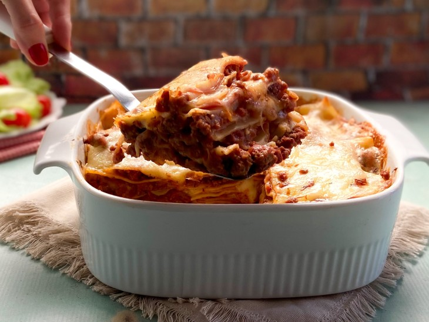

Lasanha simples

Lasanha é um clássico que todo mundo ama (até o Garfield!).
Ingredientes
1 massa de lasanha pronta
1 fio de azeite
500 gramas de presunto
500 gramas de queijo mussarela
500 gramas de carne moída
340 gramas de molho de tomate
Sal e pimenta-do-reino a gosto
Orégano a gosto
Modo de preparo
Em uma panela antiaderente, esquente um fio de azeite e refogue a carne moída;
Quando ela estiver cozida, adicione o molho de tomate, o sal, o orégano e outros temperos de sua preferência. Misture novamente e reserve;
Em outra panela, coloque água e cozinhe a massa para lasanha conforme as instruções da embalagem;
Para montar, coloque um pouco do molho e espalhe na forma;
Depois faça uma camada com a massa da lasanha;
Em seguida, uma camada de presunto;
E por fim uma camada de queijo;
Repita o processo até chegar ao topo da forma e leve ao forno preaquecido a 180ºC cerca de 20 a 30 minutos;
Retire do forno e sirva. Bom apetite!
Voltar para a lista de receitas